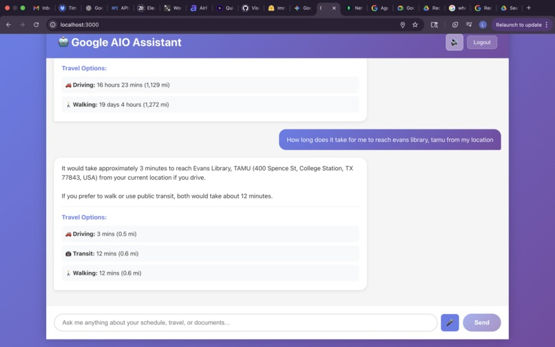
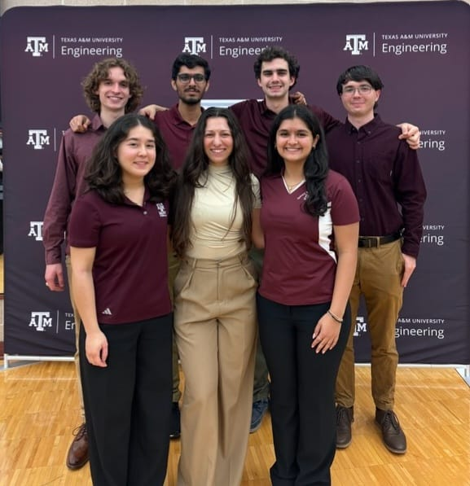
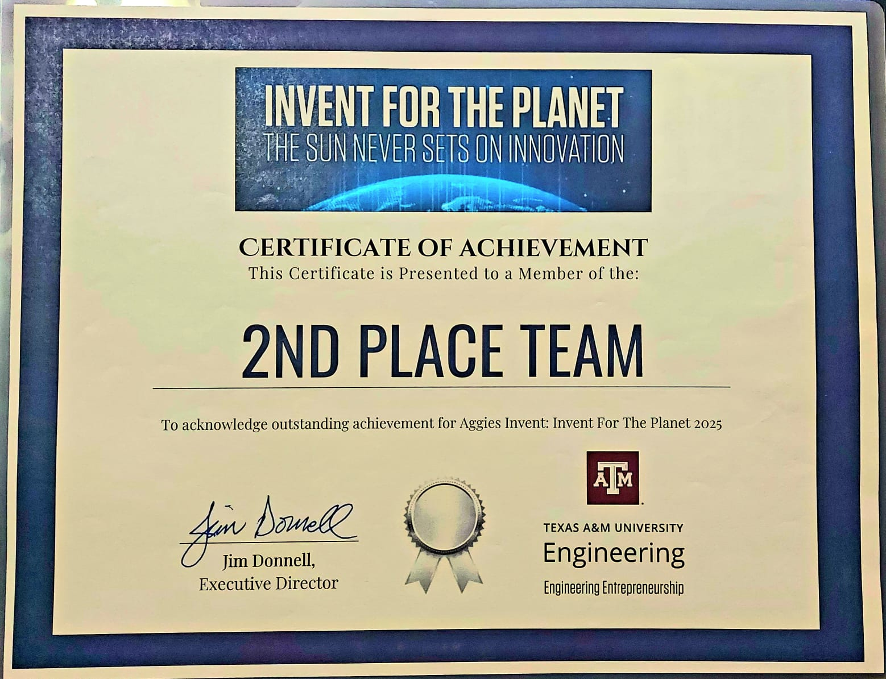

Hi, I'm Chetan Sai Borra
AI Engineer & Robotics Specialist
Master of Science in Computer Engineering from **Texas A&M University** (GPA 4.0). I build sustainable, scalable deep learning systems, real-time time-series pipelines, and motion planning algorithms for robotics.
Selected Projects & Credentials
A Bento Grid layout of case studies and professional credentials

Telecom KPI Anomaly Detection Using AI Agents
Engineered a multi-agent orchestration framework leveraging LangGraph, MCP, and custom ML models (Isolation Forests, DWT-MLEAD) to monitor cellular KPIs across 100+ sites, reducing response latency by 40%.
Microsoft Certified: Azure AI Apps and Agents Developer Associate
Credential Verification Hub
2B0CF492EDC8CB54

Image-to-Video Generation of Comics
Developed a 3D latent video diffusion model improving frame interpolation SSIM by 71.8% over standard flow baselines.

Autonomous Navigation with RRT* & A* in ROS 2
Programmed a full robot navigation stack in ROS 2 using A* and Rapidly-exploring Random Trees (RRT*) with Pure-Pursuit controller for kinematic path execution in high-fidelity Gazebo environments.
About & My Journey
A narrative tracking academic research, technical growth, and current systems focus.
Foundations in ECE & Deep Learning Research
Vellore Institute of Technology · 2020 – 2024Began my engineering journey in Electronics and Communication, maintaining a GPA of **9.02/10.0**. Developed a passion for intelligent systems by working as a research assistant, designing **W-Net CNN models** to segment sub-regions of brain tumors in MRI scans with over 90% accuracy.
Aerospace Simulation & Control Engineering
DRDL (Defence Research & Development Lab) · 2023Interned under senior defense scientists at DRDL, Hyderabad. Applied neural-tuning algorithms to pitch control matrices inside MATLAB and Simulink, introducing automated feedback optimizations that improved dynamic flight stability by **11%** and cut overshoot ratios.
Texas A&M Milestones & Hackathon Triumphs
College Station, TX · 2024 – 2025Admitted to the Master of Science in Computer Engineering program at **Texas A&M University**, maintaining a **4.0 GPA**. Competed globally, securing **2nd Place ($2,500)** at Aggie Invent for the Planet for an AI nitrate filtration system, and won the **Best Use of MongoDB Atlas** award at TAMU Datathon for building the G-3 conversational assistant.
Scalable Energy IoT Analytics & Core Focus
Utilities & Energy Services, TAMU · PresentCurrently serving as a Student ML Engineer for TAMU's Energy infrastructure. Designing production-grade time-series ETL layers and deploying statistical anomaly predictors (Isolation Forests, ARIMA) over thousands of industrial sensors to protect critical campus systems.
Life & Moments
Snapshots of campus projects, team hackathons, and certifications at Texas A&M

TAMU Datathon Team
Hackathon collaboration on G-3 Google Assistant

Winning MongoDB Atlas Prize
Award ceremony at the annual Datathon

Conversational MCP Presentation
Demonstrating G-3 Google Workspace integrations

Team 'Bio Ditch' at Aggie Invent
Secured 2nd Place & Best Prototype

Global 2nd Place Certificate
Invent for the Planet global validation certificate
Key Achievements
Award-winning solutions developed during my academic journey
TAMU Datathon
Won the **Best Use of MongoDB Atlas** award for **G-3**, an intelligent Google Workspace assistant unifying 20+ Google services with context-aware natural language conversation.
Aggie Invent for the Planet
Secured **2nd Place ($2,500)** and won the **Best Prototype Award**. Engineered an AI-driven system to reduce nitrates in agricultural runoff using real-time sensor analytics.
Professional Journey
Building production-ready systems, optimizing computational pipelines, and collaborating on academic and defense research programs.
View complete experience timelineML Engineer – Student
Utilities & Energy Services, Texas A&M University · 2025 – Present
Building scalable time-series anomaly detection pipelines (Isolation Forests, ARIMA) over IoT sensors streams across 200+ operational systems.
Research Assistant
Vellore Institute of Technology · 2023 – 2024
Optimized MRI brain tumor segmentation models (W-Net, U-Net) to achieve over 90% accuracy and 72% Mean IOU on the BraTS dataset.
Top Skills
Core domains and technologies I specialize in
Let's Build Something Impactful
I am actively seeking internships and full-time opportunities in AI/ML engineering, computer vision, and robotics. Let's discuss how I can contribute to your team.